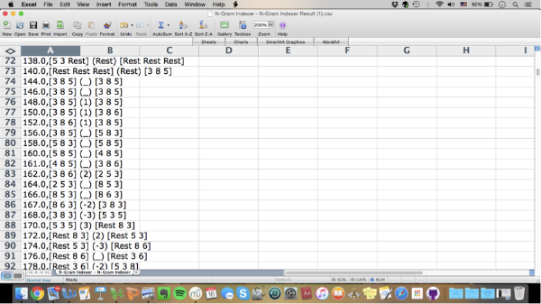
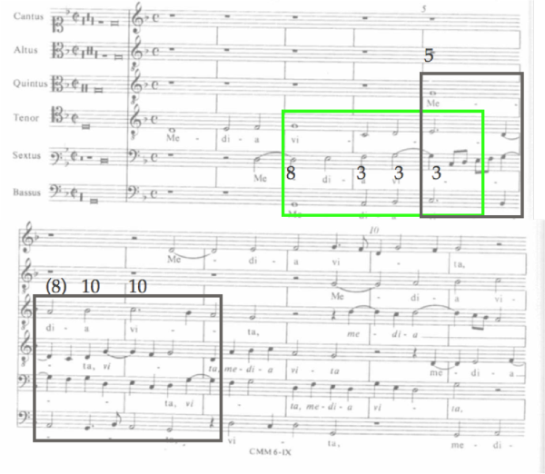
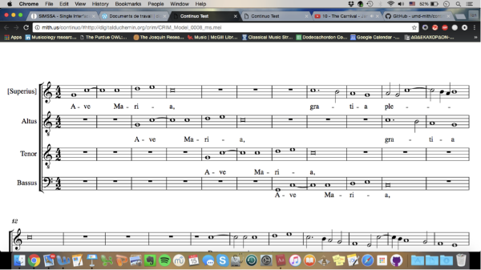
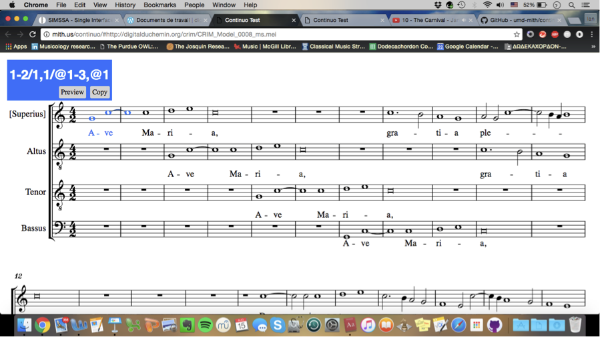
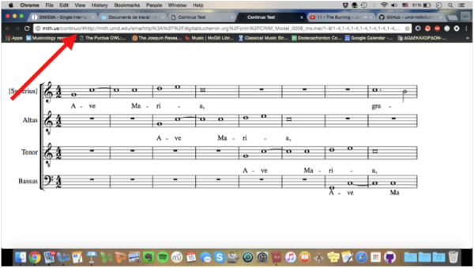

Gombert, Rodan, and CRIM: an interview with Ian Lorenz
Posted by ehopkins on August 16, 2016
Today’s post comes to us from Musicology PhD student Ian Lorenz. Entering his second year working with Julie Cumming and Peter Schubert, he’s working on a project using SIMSSA software to investigate lesser-known 16th-century composer Nicolas Gombert.
Emily Hopkins: How did you first become interested in using computers for music research? Had you done it at all before coming to McGill?
Ian Lorenz: I had not used computers in my music research prior to arriving at McGill. The research that I was involved in for my Master’s degree investigated modality in the music of the fifteenth century, in which I analyzed all of the secular works by Gilles Binchois, Guillaume Dufay, Johannes Ockeghem, Antoine Busnoys, and Johannes Tinctoris by hand. Since coming to McGill, however, I have learned about the expediency of working with computers when working on large-scale corpus studies.
EH: How did you become interested in Gombert? You mention that he is unfairly neglected – what makes this neglect unjust? Do you have a favourite Gombert composition?
IL: Gombert’s name was brought to my attention while having a general discussion about the music of the sixteenth century with a colleague of mine, Sam Howes. After listening to the piece he suggested—one that is still a personal favorite of mine, Media vita in morte sumus —I was hooked.
In my opinion, there is a depth and a focused intensity about Gombert’s music that makes it stand out from other composers working within the first quarter of the sixteenth century. After first discovering Gombert’s music I was able to continue studying and analyzing it when I took a seminar offered by Professor Julie Cumming on “Compositional Process in the Sixteenth-Century Motet.” It was in this seminar that I became aware of the challenges of analyzing Gombert’s music, and also the scant amount of research that had been done on his music. He was an extremely prolific composer in the sixteenth century—writing over 160 motets alone—and was an extraordinarily influential composer in the period after Josquin des Prez. The most recent studies of his music have focused on the composer’s use of musica ficta, or un-notated accidentals (Urquhart, 2015), text-music relations (Newcomb, 2015), and how the composer structures his multi-voice pieces (Neal, 2007). What I plan on doing, however, is looking at one of the most important aspects of Gombert’s music—his counterpoint—and also examining how the composer treated imitation.
EH: Tell me more about this project: how did you choose the repertoire, and how will you approach your analysis? What SIMSSA software will you be using, and what does it do?
IL: A majority of the research on Gombert naturally concerns his motets—as they play a prominent role in his oeuvre—but I am focusing on Gombert’s eight-tone Magnificat cycle (1552). It comprises eight polyphonic settings of a canticle recited for the Divine Office at the end of Vespers according to the eight canticle tones, or formulas used for reciting the text of the Magnificat. I chose this specific cycle for three reasons: the work is thought to be one of the last in Gombert’s compositional output; the canticle, or Magnificat, tones rest uneasily with the tradition of modality, which I plan on exploring; and finally, the Magnificats contain anywhere from three to eight voices, each one illuminating different aspects of Gombert’s counterpoint and his use of imitation. I plan on approaching my analysis of the Magnificats by first transcribing them using music-encoding software and then analyzing them through the use of SIMSSA’s Rodan Client (based on the VIS Framework), which ultimately takes the data encoded in the file and parses it for specific information. Using the Rodan Client, we can find n-grams, or n numbers of successive vertical intervals, that are organized in three groups (see Example 1).
Example 1: Sample N-grams from the Sanctus of Josquin des Prez’s Missa Pange lingua

Thus in line 76 of Example 1, the leftmost bracket indicates the intervals of a third between the soprano and bass, an octave between the alto and bass, and a fifth between the tenor and bass. The number one in parenthesis means that the bass rearticulates the same pitch, and the same intervals occur after the bass motion. In reducing the musical surface into its bare intervallic structure, N-grams facilitate the process of finding modular repetition.
EH: What appeals to you about modular analysis as a strategy for music theory? Are the SIMSSA tools well-suited to this analytical approach?
IL: Modular analysis greatly aids in quantifying one of the trickiest aspects of music from the sixteenth century—namely, imitation. Modules—a term coined by Jessie Ann Owens—occur when there is repeated counterpoint, with one of the most obvious forms of module being the intervallic motion at cadences. Most of the time the term imitation is invoked in order to account for the local musical activity of a particular phrase or section in a general way (e.g. see example 2; at the opening of Media vita, the tenor is in periodic imitation with the bassus and later the quintus). But the beauty of modular analysis is that it goes one step further. It not only takes into account whether one voice imitates another, but it also describes the specific intervallic patterns that are being imitated. Prominent types of repeated contrapuntal patterns can be aligned with specific time intervals of imitation to form what Peter Schubert has termed presentation types. What appeals to me specifically about this type of analysis is that it has not been applied to the music of Gombert and his concurrent generation because of the challenges and complexities contained therein. Let me demonstrate an example of the type of challenge I am referring to from the above-mentioned six-voice motet, Media vita in morte sumus:
Example 2: The opening point of imitation in Media vita 
The tenor initiates the point of imitation at the very beginning of the piece, which is successively followed in two-measure increments by the bassus and the quintus, respectively. There are two modules contained within this point of imitation: the first is indicated by the green box between the tenor and the bassus, and the second is between the bassus and the quintus in the black box (the numbers indicate the intervals at the rhythmic level of a half note). This type of imitation, formed from periodic entries of all voices participating in the point of imitation, is termed a periodic entry (or PEn) presentation type, with one notable error. The continuation of the original melody in the tenor is not the same as the continuation in the bassus and later on the quintus, which is a fundamental requirement for a PEn presentation type. Another challenge occurs when we add together all of the intervals from their respective positions within the modules. We see that Gombert has written counterpoint that is invertible at the twelfth (i.e. all of the numbers add up to thirteen) except for the octave contained in the parenthesis over the black box. Strictly speaking, a PEn presentation type should contain the same modules. Therefore, there are problems with calling this a PEn—as the melody of the tenor does not continue in the same way as those of the bassus and quintus—and one of the four intervals of the module is altered to avoid a striking dissonance on a downbeat. Yet there is clearly a structure behind how Gombert organized this point of imitation, which can be seen from the time intervals of imitation and his use of invertible counterpoint. It is because of this that I call this an example of an altered PEn. This opening typifies the struggle of examining imitation and counterpoint in Gombert, and it speaks to the urgency of what I hope to achieve with this project. Saying that the opening of this six-voice motet is simply “imitative” says nothing about what Gombert is actually doing, and it is through the use of modular analysis that I will be able to shed new light on the music of this forgotten master. And with the help of the Rodan Client, I will quickly be able to parse the intervallic content contained within a multi-voiced work to find repeated intervallic patterns.
EH: This summer, you were at CRIM (Citations: the Renaissance Imitation Mass). Can you tell us more about that?
IL: This summer I was fortunate enough to be chosen as a Student Analyst—one of an international team of graduate students (and advanced undergraduates) selected by an advisory board—to participate in the activities of CRIM, including the École (School of Analysis), and successive summers of analysis. I also had the opportunity to work with top scholars in the field of Renaissance music analysis, including Richard Freedman, Peter Schubert, Jesse Rodin, David Crook, and David Fiala. The goal of the project is to elucidate how composers of the sixteenth century treated imitation. In order to do this we plan on analyzing both the models of pieces imitated by later composers and masses based upon those models according to a pre-defined set of terms. From there we will create a searchable database from our findings that will also allow people to see exactly where in the score the musical event is taking place. This is made possible by rendering our scores into MEI format and viewing them through Verovio, a music notation engraving library, which allows for dynamic rendering of the music in the browser. The screenshot below shows Josquin’s motet Ave Maria, rendered from an MEI file using Verovio.

In the next example, I select the opening point of imitation—a four-voice periodic entry.

Once I am finished selecting the notes, I am able to create a permanent web address for this musical event that anyone will be able to access (see the final example below).

Musicologists and music theorists will no longer have to reference other auxiliary sources in order to understand a given analysis; they need only click on the given link and go straight to that point in the music. This means that you could query a specific corpus for a particular musical event—for instance, all four-voice PEns—and return the results with permanent links directly to those musical events in the score. In terms of being able to quantify imitation, this project will give both musicologists and music theorists many new avenues to study and analyze imitation in the mid-sixteenth-century repertoire.